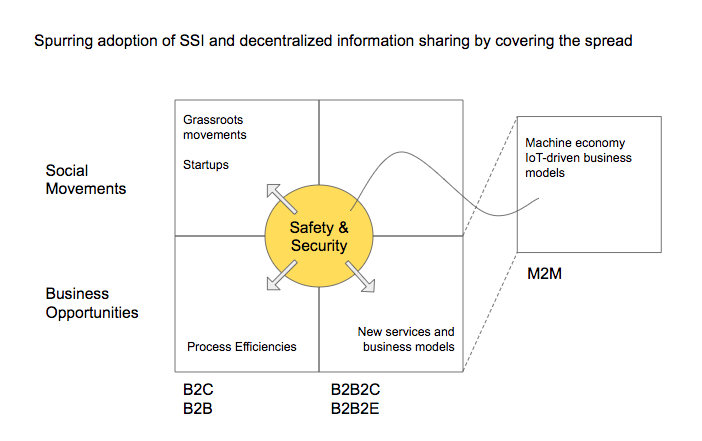
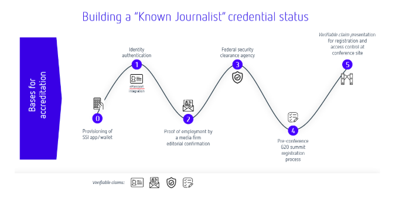

Driving Adoption with Focus on Basic Human Needs: Safety and Security
_How safety and security credentials are ideal building blocks for the adoption of larger SSI-based systems of proof and authorization. _
Presented by Sam Mathews Chase, Joni McKervey, Carsten Stöcker, and Daniel C. Burnett
Submitted to the 8th Rebooting the Web of Trust Technical Workshop
March 01-03, 2019, Barcelona
Keywords: human needs, safety, security, adoption, decentralized identity, credential system, verifiable credentials, identity, self-sovereign, decentralized identifier
Abstract
This paper investigates two primary forces that have the potential to drive adoption of decentralised technology by both individuals and enterprises: safety and security. Among the most basic humans needs, safety and security are fundamental to the functioning of society, leading governments to put regulations in place to ensure their citizens live in a safe and secure environment.
In many areas, the existing systems used to uphold safety and security regulations are often labour-intensive and inefficient. Through four distinct use cases this paper proposes to demonstrate that measurable improvements can be made to many safety and security-related systems with the use of verifiable credentials. The implementation of these use cases offers a unique opportunity to design non-surveillant systems for information exchange that benefit both the individuals and organizations using the system, while simultaneously laying the foundation for broader adoption of personal data wallets.
In this paper we will examine four use cases: updating fire safety training with spatial computing; reducing fatigue-related workplace accidents with sleep data; issuing security clearances for journalists through background checks; and the management of trust in accident-prevention systems for autonomous driving programs. Each of these use cases will track a user's journey and highlight the implementation of verifiable credentials as a means to increase trust and efficiency while also protecting personally identifying information (PII).
Our goal is to outline systems using self-sovereign principles that provide mutual benefit to system administrators and users, and have a net positive impact on process efficiencies. Each use case describes a decentralised credential system model that can be further adopted at scale.
Verifiable Credentials
The original motivation behind the Verifiable Credentials (VC) standardization work (https://w3c.github.io/vc-data-model/) was twofold: to provide equivalents to the physical credentials we carry around with us such as driver's licenses, passports, and diplomas, and to solve the problems that people claim they need identity to solve, but without creating a new, restrictive notion of identity.
VCs have both a simple idea and a simple structure. A VC has
- An ID
- An Issuer (represented as an ID)
- A Subject (represented as an ID)
- One or more claims, each listing a claimed property of the Subject and its claimed value
- A proof section containing cryptographic evidence to prove that the Issuer actually issued the listed claims. This evidence could be a signature over the whole credential or a zero-knowledge proof that has the same effect. Note that VCs don't provide verification of the truth or falsehood of the claims, just verification that the claims were made.
Although VCs have other properties as well such as revocation or expiration of claims, timestamps, etc., those are all optional.
Note something very important above - there is a Subject identifier (the ID), but no claimed identity assumption. While personally-identifiable information can be provided as claims in a VC, many use cases do not require that. For example, some of our use cases.
Why start here?
As a technology intended to benefit humanity rather than just being "another way to create a commercial identity", adoption of verifiable credentials will depend on utility beyond pure commercial drivers. Safety and security matter to everyone, at every level of society, and changes to safety and security practices require both widespread public adoption (grassroots) and organizational support (commercial). Beginning here offers the opportunity to demonstrate the value of such digital credentials where only the absolute minimum amount of user PII is involved, while updates and improvements to these systems present benefits on all sides, from the individual user to the enterprise organization to governmental bodies.

Implementation: Fire Safety Credentials
Background
Safety instructions and protocols are trapped in heavily abstracted 2D signage and documentation which is not sufficient in many cases. When we rely on GPS to find our way our brains internal wayfinding systems aren't activated[1], the long term effects being a declining ability to orient ourselves in space and time[2]. In emergencies, people experience higher physiological and psychological stress and perceive their environment differently resulting in poorer way-finding performance, as compared with people in normal conditions[3]. As the world population grows so do the intricacies of our structures and transportation systems.
Finding a solution to the widespread dulling of our spatial awareness while still finding our way around efficiently poses a big challenge. When we choose to navigate we engage our hippocampi, which stores mental maps of our surroundings, and prefrontal cortex, which helps us make decisions.
[1]Hippocampal and prefrontal processing of network topology to simulate the future
Amir-Homayoun Javadi1,, Beatrix Emo2,5,, Lorelei R. Howard3, Fiona E. Zisch4,5, Yichao Yu6, Rebecca Knight7, Joao Pinelo Silva8 & Hugo J. Spiers4
[2] Fajnerova, Iveta & Gregus, David & Hlinka, Jaroslav & Nekovarova, Tereza & Škoch, Antonín & Zítka, Tomáš & Romportl, Jan & Žáčková, Eva & Horacek, Jiri. (2018). Could Prolonged Usage of GPS Navigation Implemented in Augmented Reality Smart Glasses Affect Hippocampal Functional Connectivity?. BioMed Research International. 2018
[3]Way-finding during a fire emergency: an experimental study in a virtual environment.
Meng F1, Zhang W.
Safety Game Overview
Issuer sends a safety drill game to holder, the holder registers their unique game ID and verifies they are human. The holder plays the safety escape game to its completion and is issued a credential. This credential is sent back to the issuers ledger as a completed credential, this credential is also stored with the holder. The issuer presents their manifest of credentials to a verifier.
Employee training ledgers provide accurate records of compliance with safety code regulations and organizational due-diligence
Verifiable due-diligence reduces exposure to liability
Implementation: Safety Credentials for Sleep
For constructions companies wanting to incentivize positive sleep habits and overall health and wellness for employees in order to reduce on the job accident and injury rates, we propose a sleep credential system that uses non-surveillant information exchange through verified credentials to reward employees for achieving sleep goals.
_Unlike the current option, where employers collect employees' raw health data, Loci does not collect or share employees' personally identifying information. _
Lack of sleep is a leading cause of death and injury on construction and manufacturing job sites in Canada [cite]. More than 43% of workers are sleep-deprived, and construction and manufacturing report the highest number of workplace injuries and death out of all occupations tracked by the Association of Workers' Compensation Boards of Canada.
To support the creation of a culture of health, wellness and safety, companies in these industries are adopting the practice of collecting employee health data from devices like FitBits and Apple Watches to credit positive health practices [cite] and lower the occurrences of death and injury.
While the motivation is noble at its core, the practice is surveillant and invasive. Sharing your personal health data should not be a condition of your employment. These companies, however, have no other way to verify an employee's sleep data. Additionally, companies who collect employee data are also taking on the cost and liability that comes with storing, managing and protecting it.
Solution
Use VCs to provide employees a way of attesting their sleep habits meet the minimum safety requirements set out by their employer without disclosing any of their raw health data. Use an intermediary, like WorkSafe BC for example, as verifier for the credentials. Employees who share VCs attesting they've met sleep thresholds are rewarded for contributing to improved job site safety and wellbeing. Employee's private information is protected, and employers do not take on the liability and costs of collecting personal data.
Use Case Journalist Accreditation for security sensitive events
The challenge high-profile conferences such as G20 or WEF is that the security and accreditation requirements are increasing while participants from many countries and multiple security organisations are involved. Security background checks and clearances for conference participants are often based on paper processes. We see a great potential in digitising these processes to reduce costs and increase the event security. For the sake of focus we are outlining the benefits of SSI for journalists accreditation in a high-profile event.
In journalism, accreditation refers to the admission of media representatives to certain events.
The range extends from the simple issue of a press admission ticket without prior registration to authentication and a security check in advance as well as agreements as to when which journalist will accompany which part of an event in which way (photojournalism, written reporting, television or radio recordings).
The accreditation is often based on proof that the media representative is actually a journalist. This can be done by means of an editorial confirmation, work samples or a press card. The bases for accreditation are determined by the organizer, so that they do not have to be uniform.
In most cases, accreditation is associated with the issue of special badges to media representatives.
Today, when a journalist arrives at a high-profile conference, on-site security teams must determine admissibility – permission to enter the conference – rapidly and accurately. A security employee then determines the class of admission – e.g. temporary access, access to parts of the conference – or the need for further scrutiny or the reason for a refusal of entry (or exit), such as false authentication, revoked editorial confirmation, revoked security clearance or void conference ticket. For example, at the last G20 summit in Hamburg, Germany, policemen used paper lists of the names of people who had their security clearance revoked prior to the conference, cross-referencing the list with the names of each person entering the conference.
The benefits of using SSI in the use case of journalist accreditation are
- Digitisation of the accreditation process prior to the event as well as on-site registration and verification of the journalist
- Increased security in issuing, revoking and verifying accreditation-related claims
- Automation and cost reduction
Building a Known Journalist Status

Example:
Washington Post (WP) employs journalist and the journalist accredits as WP staff member for G20 summit. Journalist receives a conference accreditation together with access restrictions from the organizer.
Journalists can only be admitted to the respective conference during the on-site registration process if they
- can prove his identity
- the identity card is verifiably stored under its digital identity Claim from authentication provider
- he can prove that he is still employed by DPA Claim from DPA (editorial confirmation)
... that he has a positive OSiP review Claim of the OSiP procedure
... that he is accredited and has access permission to parts of the event claim of the organizer
... that it fulfils further requirements according to the accreditation bases Further claims
Media companies and organizers can validate the entire set of claims including their revocation prior to the conference as well.
Verifiable driving event data chain for automotive use cases
Safety and security are of utmost importance in cyber-physical systems. The analysis of dangerous driving situations and calculation of control signals to prevent dangerous situations is an important capability that requires data from different sources to be processed by different algorithms.
Dangerous driving events can be divided into two groups: (1) the interaction between a driver's vehicle and the road environment, and (2) the interaction between a driver's vehicle and nearby vehicles [5].
Diverse methods for enhancing driving safety have been proposed. Such methods can be roughly classified as passive or active. Passive methods (e.g., seat-belts, airbags, and anti-lock braking systems), which have significantly reduced traffic fatalities, were originally introduced to diminish the degree of injury from an accident. By contrast, active methods are designed to prevent accidents from occurring. Driver assistance systems (DAS) are designed to alert the driver - or an autonomous driving module - as quickly as possible to a potentially dangerous situation.
The two classes of driving events may occur simultaneously and lead to certain serious traffic situations. Automotive industry is working on active methods and systems including machine learning algorithms to analyze these two kinds of events and determine dangerous situations from data collected by various sensors and data from external sources. The machine learning output labels about dangerous curves, road obstacles or poor vehicle conditions are fed into control, transaction and risk systems. In distributed mobility systems the trustworthiness and accuracy of the output labels must be independently verifiable.
Key question: How can I trust vehicle identity data, 3rd party data and machine learning labels that are created and processed along a distributed mobility value chain?
To achieve trustworthiness of output labels we are planning to blend the verifiable data chain concept [1] with historic driving event data and black box algorithms to build a verifiable agile driving solution:
- Interoperable decentral identity and verifiable digital twinning protocol
- Cryptographically secured and blockchain-enabled data chains
- E2E integration of remote sensing (telematics) data and machine learning algorithms
This approach demonstrates how the following trust problems can be addressed with decentralised identity systems:
- Vehicle provenance and configuration
- Provenance, verifiability and integrity of the driving event input data (or telematics data)
- Integrity and transparency of driving event data chain when multiple 3rd party intermediaries are involved
- Credentials about benchmarking of ML algorithms and training data
- Aggregated accuracy and trustworthiness of predicted ML labels and attributes
References:
http://www3.weforum.org/docs/WEF_The_Known_Traveller_Digital_Identity_Concept.pdf
[A DID for Everything - Rebooting Web of Trust Working Draft](https://github.com/WebOfTrustInfo/rwot7/blob/master/draft-documents/ A_DID_for_everything.md
[5] Dangerous Driving Event Analysis System by a Cascaded Fuzzy Reasoning Petri Net